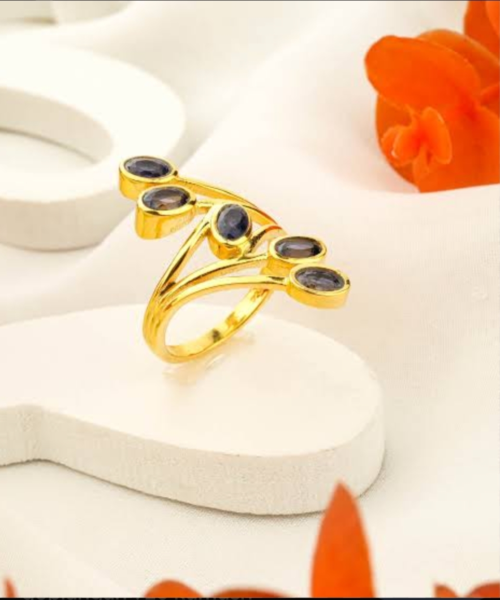
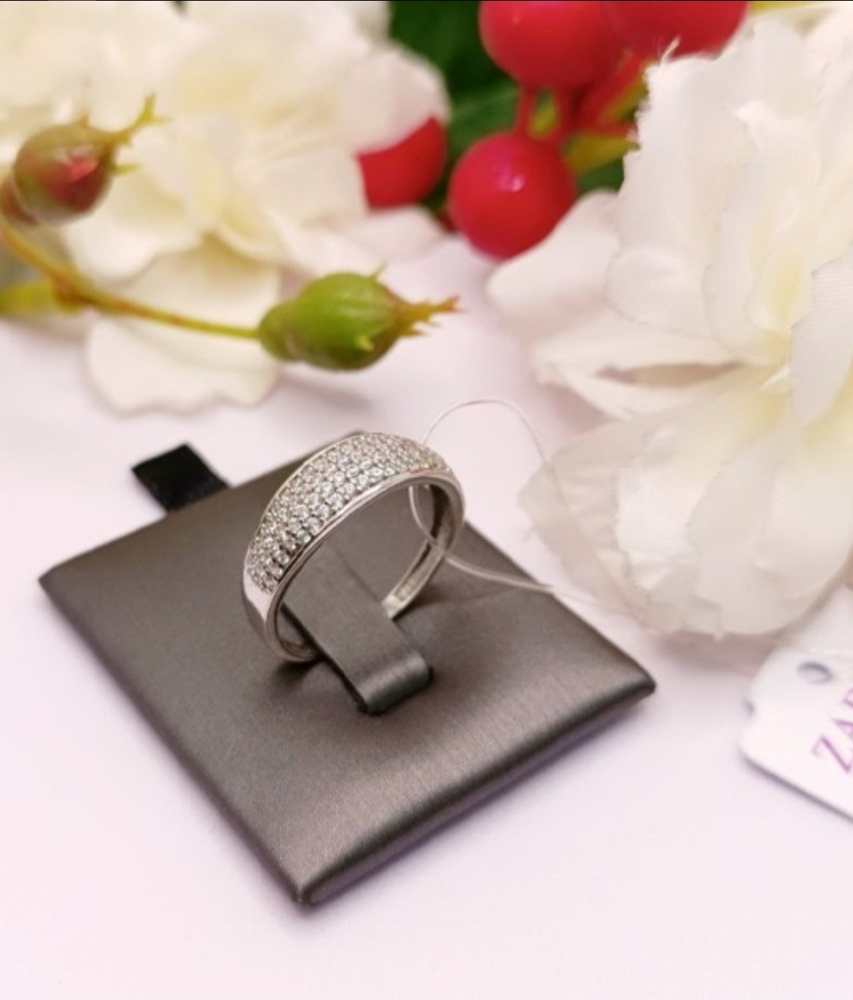

💍 Ali & Laylo 💍
25-aprel 2026
Sho'rchi tumani
25-aprel 2026
Sho'rchi tumani
📍 Manzil: Sho'rchi tumani Ideal SS to'yxonasi

Ikki daryo tutashsa - ummon boʻladi,
ikki qalb birlashsa jahon boʻladi.
Bizning kichik jahonimiz poydevori qoʻyilayotgan kunda mehmonimiz boʻling
ikki qalb birlashsa jahon boʻladi.
Bizning kichik jahonimiz poydevori qoʻyilayotgan kunda mehmonimiz boʻling